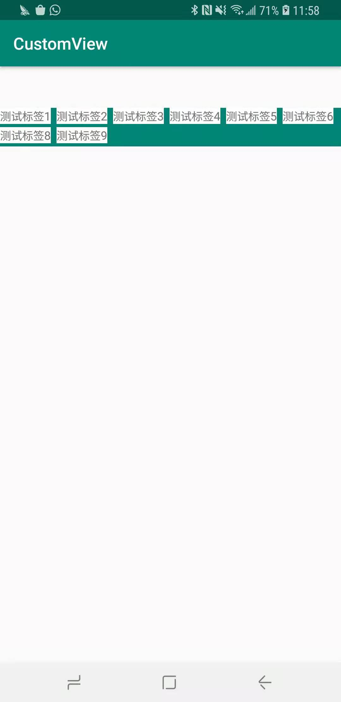

android-自定义View 继承ViewGroup
android 自定义View 继承ViewGroup
自定义ViewGroup与自定义View不同.
自定义View主要侧重于实现如何绘制，而自定义ViewGroup主要侧重于如何布局。
所以自定义ViewGroup时，必须重写onMeasure、onLayout函数。
onMeasure测量每个子View的大小，最后得出容器的大小
onLayout上根据测量的每个子View，来对每个子View进行布局
自定义FlowLayout
这里我们自定义一个自动换行的流式布局。
效果图：

设计思路：
1、默认横向布局、当横向布局宽度要超出容器宽度时，则自动换行，
2、将整个视图分割成多少行，而每行又能分割成多个视图
3、使用两个数组，一个记录单行视图，一个记录所有行（也就是前一个数组）
4、每次需要换行时，记录这行的高度，当前所有视图的高度，当所有子视图计算完毕，就能知道所有子视图一起需要的宽度与高度
5、根据ViewGroup使用时的SpecMode来得出最后实际的宽高,并将宽高设置上去，此处onMeasure函数完成
6、处理onLayout，遍历所有行，遍历每一行，得到每个View的left、top、right、bottom，调用View.layout函数，将每个View相对于父容器的位置设置上去，此时就完成了布局，整个FlowLayout的设计基本完成
关于第5点，与自定义View中是一样的
| EXACTLY | AT_MOST | UNSPECIFIED | <-MeasureSpec | |
|---|---|---|---|---|
| wrap_parnet | EXACTLY | AT_MOST | AT_MOST | |
| match_parent | EXACTLY | AT_MOST | AT_MOST | |
| 50dp | 50dp | 50dp | 50dp | |
| ^LayoutParams |
onMeasure
所以onMeasure函数1
2
3
4
5
6
7
8
9
10
11
12
13
14
15
16
17
18
19
20
21
22
23
24
25
26
27
28
29
30
31
32
33
34
35
36
37
38
39
40
41
42
43
44
45
46
47
48
49
50
51
52
53
54
55
56
57
58
59
60
61
62
63
64
65
66
67
68
69
70
71
72
73
74
75
76
77
78
79
80
81@Override
protected void onMeasure(int widthMeasureSpec, int heightMeasureSpec) {
super.onMeasure(widthMeasureSpec, heightMeasureSpec);
recyle();
// 获取各个偏距
int paddingLeft = getPaddingLeft();
int paddingRight = getPaddingRight();
int paddingTop = getPaddingTop();
// 先获取父容器能给的尺寸大小
int selfWidth = MeasureSpec.getSize(widthMeasureSpec);
int selfHeight = MeasureSpec.getSize(heightMeasureSpec);
// 获取子视图的数量
int childViewCount = getChildCount();
// 记录每行中的子view
List<View>lineViews = new ArrayList<>();
int lineWidthUsed = 0; // 每行已用宽度
int lineHeight = 0; // 行高
int parentNeededWidth = 0; // measure过程中，子View要求的父ViewGroup的宽
int parentNeededHeight = 0; // measure过程中，子View要求的父ViewGroup的高
// 遍历所有的子View
for (int i = 0 ; i < childViewCount; i ++) {
View childView = getChildAt(i);
// 获取子视图的宽、高
LayoutParams lp = childView.getLayoutParams();
// 如果View存在 因为GONE的视图不占位置
if(childView.getVisibility() != GONE) {
// 获取子视图的测量规格
int childWidthMeasureSpec = getChildMeasureSpec(widthMeasureSpec,
paddingLeft + paddingRight,
lp.width);
int childHeightMeasureSpec = getChildMeasureSpec(heightMeasureSpec,
paddingTop+paddingTop,
lp.height);
// 设置子View的尺寸
childView.measure(childWidthMeasureSpec, childHeightMeasureSpec);
// 当执行完measure函数后，即可获取到该子view的尺寸
int childViewWidth = childView.getMeasuredWidth();
int childVieeHeight = childView.getMeasuredHeight();
// 当所用宽度 + 宽度间隔 + 当前子视图宽度 > 容器View的宽度，则需要换行
if(lineWidthUsed + mHorizontalSpacing + childViewWidth > selfWidth) {
// 记录当前行的视图、高度
allView.add(lineViews);
lineHeights.add(lineHeight);
// 父容器需要的宽、高
parentNeededHeight = parentNeededHeight + lineHeight + mVerticalSpacing;
parentNeededWidth = Math.max(parentNeededWidth, lineWidthUsed + mHorizontalSpacing);
// 执行换行、清空当前行数据
lineViews = new ArrayList<>();
lineHeight = 0;
lineWidthUsed = 0;
} else {
lineViews.add(childView);
lineHeight = Math.max(lineHeight, childVieeHeight);
lineWidthUsed = lineWidthUsed + childViewWidth + mHorizontalSpacing;
}
//处理最后一行数据 因为最后一行肯定不会触发上面的换行
if (i == childViewCount - 1) {
allView.add(lineViews);
lineHeights.add(lineHeight);
parentNeededHeight = parentNeededHeight + lineHeight + mVerticalSpacing;
parentNeededWidth = Math.max(parentNeededWidth, lineWidthUsed + mHorizontalSpacing);
}
}
}
// 通过子View的计算得出了需要的最小具体值 再根据spec一起得出最后应该的值 此处需要参考上面提到的第5点
// 根据mode以及lp获取实际值
int widthMode = MeasureSpec.getMode(widthMeasureSpec);
int heightMode = MeasureSpec.getMode(heightMeasureSpec);
int realWidth = widthMode == MeasureSpec.EXACTLY ? selfWidth : parentNeededWidth;
int realHeight = heightMode == MeasureSpec.EXACTLY ? selfHeight : parentNeededHeight;
// 设置实际尺寸
setMeasuredDimension(realWidth, realHeight);
}
这样我们就完成了整个ViewGroup的尺寸测量，ViewGroup的onMeasure过程其实就是遍历子View，测量各个子View的过程。
measure方法会调用到onMeasure函数，而在onMeasure中会测量到具体尺寸。
注意一下在onMeasure执行时，我们调用了一个recyle函数，1
2
3
4 private void recyle() {
allView.clear();
lineHeights.clear();
}
这个函数作用就是将记录的每行view、行高信息清空。因为onMeasure函数会被调用多次，
上面说了，容器的测量就会遍历子View测量，因为上层View视图中，至少存在两层ViewGroup，所以最少会被执行两次。
所以每次执行此函数时，我们需要清空一下上一次的数据。
测量函数执行完毕，现在我们知道了每个view的大小，接下来我们就按照记录的View的排列、行高等信息，
来对每个子View做布局处理
onLayout
在上面的话，我们已经获取到了每个view的行数排列，我们只需再遍历到所有行的View，
获取到每个view针对父容器的左偏距、上偏距就能够对view定位，再获取该view的宽高时，就能获取到右偏距、下偏距了。
注意在onMeasure执行完毕后，就能调用getMeasuredWidth，获取尺寸信息
而在onLayout执行完毕后，就能调用getWidth获取尺寸信息
1 | @Override |
这样我们自定义一个ViewGroup就完成了，实现了一个自动换行的ViewGroup